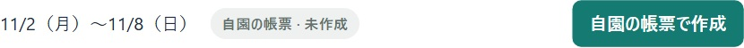
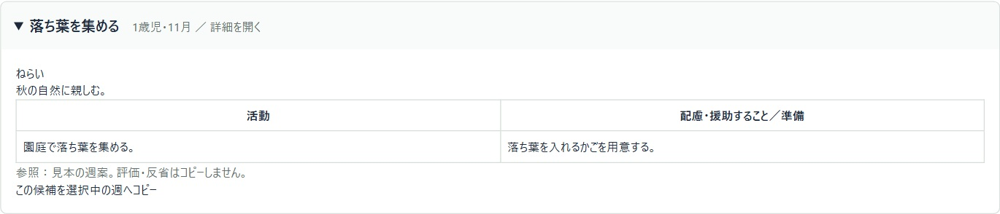
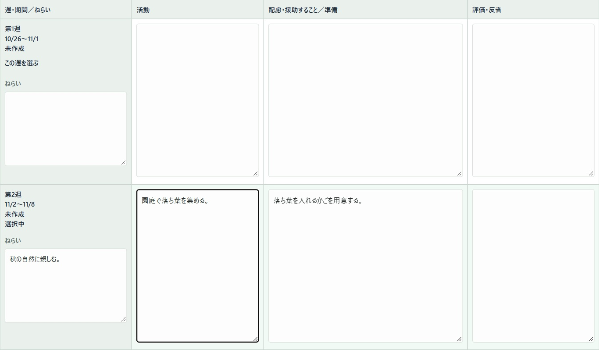
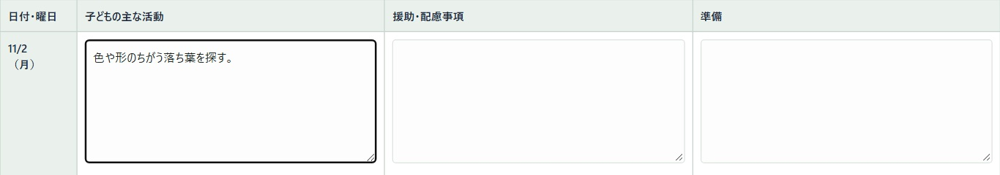
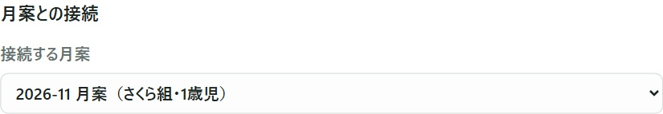
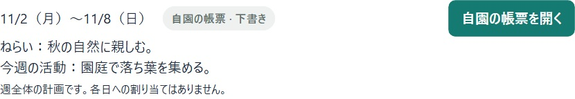

週案を書く
書きたい週を選び、ねらいと活動を書きます。0〜2歳は週ごと、3〜5歳は曜日ごとに書きます。
写真は架空のクラスの画面です。押すと大きく見られます。
1書きたい週を開く
「指導計画」の「自園の帳票」で「週案」を押します。「クラス」「年齢」「表示月」を選び、「表示」を押します。
週の始まりと終わりの日付を見て、その週の「自園の帳票で作成」を押します。開いたら「基本情報」で対象週と作成者を確かめます。

2参考にしたい週案があるとき
そのまま自分で書くときは、下の「週日指導計画（週案）」に進みます。
例を使うときは「参考になる週案例を探す」で活動名を押します。内容を読み、「この候補を選択中の週へコピー」を押します。すでに活動を書いているときは、置き換えてよいかを画面で確かめます。評価・反省は自分で書きます。

30〜2歳は、その週の行に書く
月の中の週が縦に並びます。左に「選択中」と出ている行の日付を見ます。別の週を使うときは「この週を選ぶ」を押します。
その行の「ねらい」「活動」「配慮・援助すること／準備」を書きます。「評価・反省」はその週を振り返って書けます。

43〜5歳は、曜日ごとに書く
「今週のねらい」を書き、曜日の行に「子どもの主な活動」「援助・配慮事項」「準備」を入れます。土曜日も書くときは「基本情報」の「土曜を含める」にチェックを入れます。

5月案とつなげたいとき
「月案との接続」で「接続する月案」を開き、同じクラスの月案を選びます。月案をつながずに書くときは「接続しない」のまま進みます。

6保存して、同じ週を開く
画面下の「下書きを保存」を押します。「週案1件を保存しました」のように件数が出ます。同じ月・年齢の別の週も書き換えた場合は、一緒に保存されます。
続きを書くときは「週案カレンダー」で同じ週の「自園の帳票を開く」を押します。
